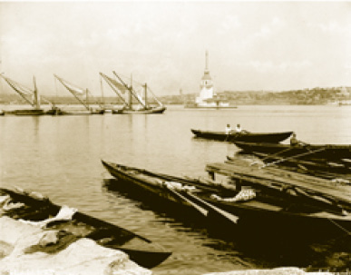
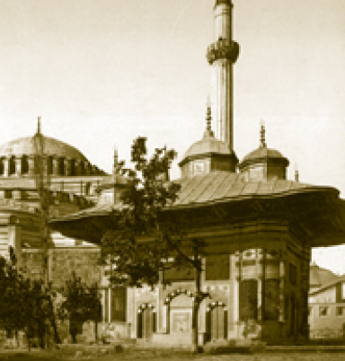

İSTANBUL BİR DÜNYA BAŞKENTİ
İstanbul’un Fethi, dünya tarihinde bir dönüm noktasıdır. Fetih, bütün dünyada bilim, sanat ve kültürel sahalarda derin yankılar meydana getirmiştir. Fethin üstün fen bilgisine dayanan silah gücünün bir mahsulü olduğu tartışma götürmez bir gerçektir. Yüzyıllar boyunca bütün muhasaralara karşı koyan surlar, Osmanlı’nın gencecik sultanının gerçekleştirdiği silah teknolojisi karşısında delik deşik olmuştur.
1453’ten sonra İstanbul, yeniden bir “Dünya Başkenti” durumuna gelmiş; yeniden Balkanlar ve Küçük Asya’daki geniş bir art ülkeyle (hinterlantla) bütünleşmiştir. Haddizatında 2010 yılı için İstanbul’un “Avrupa Kültür Başkenti” seçilmesi, bu eski dünya başkenti için gecikmiş ancak yerinde bir karardır. 1985’ten günümüze kadar “Avrupa Kültür Başkenti” seçilen pek çok kentin geçmişleri İstanbul kadar köklü değildir. Bu konuda İstanbul’la benzerlik gösteren tek şehir bence İskenderiye’dir.
İstanbul, Avrupa’nın ilk üniversite şehridir. Thedosyus, hukuk ve ilahiyat fakülteleriyle üniversite denen kurumun dünyadaki ilk temelini atmıştır. Fethin ardından İstanbul’da ilk üniversite kurulurken Fatih Camii seçilmiş ve bu üniversiteye Sahn-ı Seman (sekiz auditorium) adı verilmiştir. Kapalıçarşı başta olmak üzere Perşembe Pazarı’ndaki han, diğer çarşılar bunun örneğidir. Medrese, imarethâne, cami, han ve hamam gibi kurumlar paşalara tevdi edilmiş; bunlar, şehrin belirli bir bölgesinde bu gibi tesisler kurunca paşanın adıyla anılmıştır. Bu nedenledir ki İstanbul, semtlerinin adı itibariyle bir paşalar şehridir. Medreseler, camiler, imarethâneler, çarşılar, bedestenler, kervansaraylar, hanlar, hamamlar… Osmanlıların eline geçtiğinde oldukça perişan ve harabe bir vaziyette olan Doğu Roma payitahtı, yapılan mimari faaliyetler neticesinde bir Osmanlı Türk şehri oluvermiştir. Fatih’in 1453’te şehre girdiği vakit Bizans kayserlerinin sarayında gördüğü manzara karşısında kime ait olduğu belli olmayan bir beyit söylediği rivayet edilir:
“Bum nevbet mizened der tarem-i Afrasyâb
Perdedar-i mikoned der kasr-ı kayzer ankebud”
Afrasyab’ın balkonunda baykuş nevbet çalıyor, yani bando görevini yerine getiriyor. (Bizans hükümdarlarının kapısında bizim mehter takımı gibi nevbet vuran bir takım vardır.) Kayserin kasrında örümcek perdedarlık (protokol şefliği) yapıyor.
Bir dünya başkenti için bu, hazin bir durumdur. Fatih, bu hâldeki Bizans Sarayı’nda oturmak istememiştir, bulduğu mirasla örtüşen yeni bir Osmanlı şehri ortaya çıkarmıştır. Bu dönemde göçlerle ve sürgün denilen mecburi iskânla nüfus artışını sağlama ve çöken, boşalan bir kentin restorasyonu amaçlanmaktadır. Topkapı Sarayı ise hiçbir zaman Bizans Sarayı’nın durumuna düşmemiştir.
İstanbul’daki iş merkezi, konut alanındaki yerleşme düzenleri Bizans devrindeki dokuyu sürdürmüştür. İstanbul’da bu dönemde göçlerle ve mecburi iskânla nüfus artışı gerçekleştirilmeye çalışılmıştır ki bunun temelinde ekonomik yönden çöken ve boşalan bu kentin restorasyonu amaçlanmaktadır.
İstanbul’un İskân Düzeni
1400’lü yılların Konstantinopolis’inin hususen konut bölgeleri büyük miktarda boşalmıştır. 1403’te Timur’a elçi olarak giderken Konstantinopolis’ten geçen Kastilyalı Clavijo, şehrin mühim kısmının bomboş arsalarla, tarım yapılan bahçe ve bostanlarla dolu olduğunu söylemektedir. İstanbul’un bilinen en eski haritasını çizen Floransalı Cristoforo Buondelmonte, 1419’da yaptığı ziyarette şehrin harap ve bölük pörçük hâlinden bahsetmektedir. Bertrandon de la Brocquére, 1433’te, kentin yer yer ekili alanlarla bölündüğünden söz etmektedir. Esasen merkezdeki bürokratik kurumların, saray ve iş çevresinin bulunduğu mekân dışında, Konstantinopolis, gerek Bizans gerekse Osmanlı devirlerinde ahşap binalar ve yangın artığı boş arsa ve bahçelerle ünlüdür. İstanbul’un tarihî şehir planına bakıldığında, geleneksel kent dokusuna has nitelikleri göze çarpar. Yönetim-kontrol bölgesi, iş-liman bölgesi ile konut alanı da bu geleneksel yapıya göre sıralanmıştır.
Matbah-ı amire kısmında özellikle Topkapı saray arşivinin önündeki büyük sütun başlıkları Bizans döneminden kalmadır. Yine Bâbü’s selam’ı geçince saray arabalarının teşhir edildiği vitrinlerin önündeki sütun başlıkları da bu döneme aittir. Bazı sütun başlıkları ve sütunlar sarayın içine, o bölgeye aittir; yani düpedüz Bizantion denilen mıntıkadan kalmadır. Bir kısmını ise Fatih Sultan Mehmed İstanbul’da bulundukları muhtelif bölgelerden buraya taşıtmıştır. Her hâlükârda sarayımızın küratörlerinden Doç. Dr. Hülya Tezcan’ın eseri, Topkapı’nın altında bilinen Bizans mimarisini anlatan en önemli kitaptır. Bunun dışında Topkapı Sarayı dâhilinde önemli veya sistematik bir kazı yapılmamıştır. Yapılması da mümkün görünmemektedir. Mamafih sondaj metoduyla bazı eski eserler çıkarılabilir. İmparatorluk dönemine ait Gotlar Sütunu ve iki şapelin dışında da bugün bazı sarnıçlar göze çarpmaktadır ve herhangi bir kazı ve inşaat faaliyetinde sur içindeki alanda her an bir Bizans dönemi eserine rastlanması mümkündür.

Sirkeci’den Kız Kulesi’nin görünüşü (Yaklaşık 1892)

20. yüzyıl başlarında III. Ahmed Çeşmesi